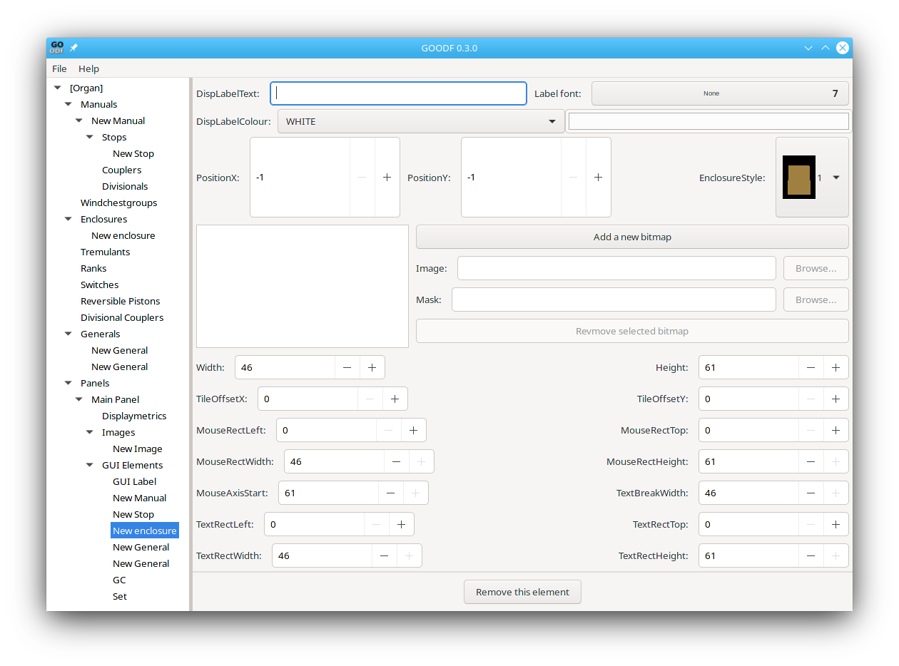
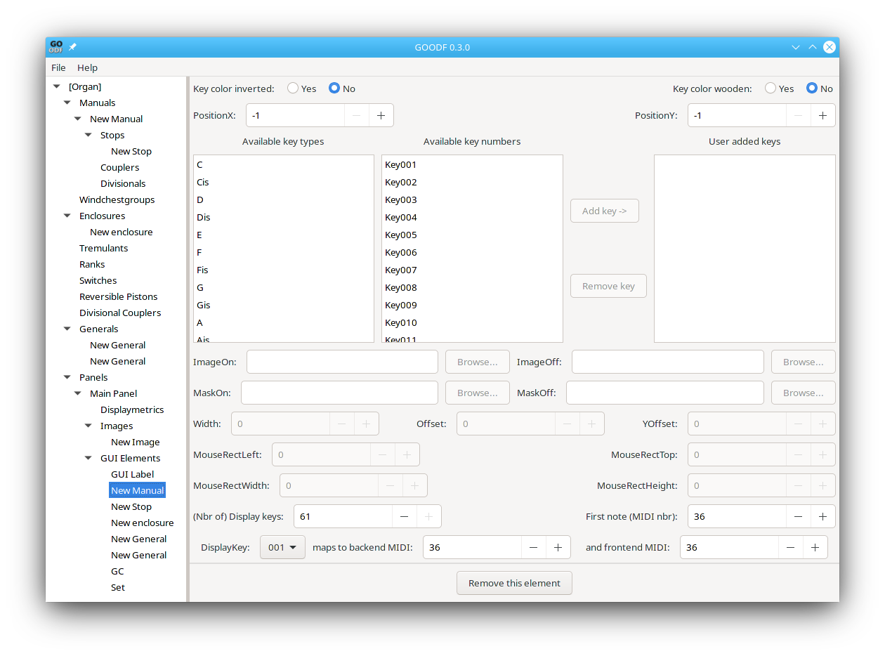
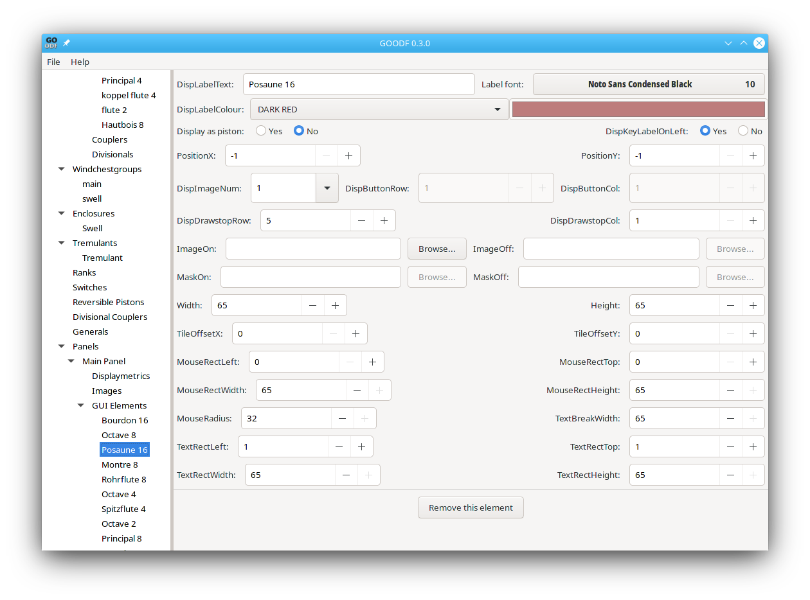

Other GUI elements include manuals, enclosures, buttons, and drawstops. All of these elements can be displayed on a panel using images internal to GrandOrgue, or with fully custom images.
Enclosures are represented by swell pedals (built in) or sliders(custom, normally used for setting volume of noises and surround sound channels)

DisplayLabelText: If you don’t enter anything here the name of the Stop, Tremulant, or Switch entered when you created it will automatically apply. You may however want to add a different name, put the name in ALL CAPS, or add spaces to allow a line break so that the name fits within the stop’s DisplayImage.
Labelfont: this is a pulldown of all available fonts. You only need to specify if you want a different font than default font for enclosures, a different font than the Control Label Font in the DisplayMetrics window for any button derived type, or different font than the Group Label Font for any label type.
DisplayLabelColour: Select the colour for the text from the pulldown or select Custom Color and then click on the color sample to the right to pop up a color selector window. You can pick one of the predefined colors from this window, or click on the + sign in this window to define a new custom color which can then be selected.
Enclosure Style This is a pulldown that shows the available Images built into GrandOrgue for drawstops.
PositionX and PositionY The location of the enclosure on the panel. 0 to size of panel in pixels. Use -1 to let GOODF manage the placement
Width (integer 0 - panel width, default: bitmap width) These are set automatically if a build in enclosure is chosen
Height(integer 0 - panel height, default: bitmap height)
TileOffsetX (integer 0 - bitmap width, default: 0) X position on the bitmap of the left pixel of the enclosure.
TileOffsetY (integer 0 - bitmap width, default: 0) Y position on the bitmap of the top pixel of the enclosure.
MouseRectLeft (integer 0 - Width, default: 0) relative X of left border of the mouse rectangle (region in which the GUI element responds to the mouse)
MouseRectTop (integer 0 - Height, default: implementation dependent) relative Y of top border of the mouse rectangle.
MouseRectWidth (integer 0 - Width, default: Width) width of the mouse rectangle.
MouseRectHeight (integer 0 - Height, default: implementation dependent) height of the mouse rectangle.
MouseAxisStart (integer 0 - MouseRectHeight, default: implementation dependent) top Y coordinate of the axis.
MouseAxisEnd (integer MouseAxisStart - MouseRectHeight, default: implementation dependent) bottom Y coordinate of the axis.
TextRectLeft (integer 0 - Height, default: 0) relative X of left border of the text rectangle.
TextRectTop (integer 0 - Height, default: implementation dependent) relative Y of top border of the text rectangle.
TextRectWidth (integer 0 - Width, default: Width) width of the text rectangle.
TextRectHeight (integer 0 - Height, default: implementation dependent) height of the text rectangle.
TextBreakWidth (integer 0 - text rectangle width, default: TextWidth) If 0, no text is displayed. Otherwise the value specifies the maximum line length used for text breaking.
Custom enclosure GUI elements are created using a series of images loaded in sequence. Each image represents a different position of the enclosure element. A separate mask may be loaded. Since the enclosure responds to a MIDI Continuous Controller with only 128 possible values, there need be no more than 128 images. However, fewer images are often used, perhaps 16 or 32.
Manual GUI elements can be edited primarily to create custom manual GUI elements rather than using the images built into GrandOrgue. The manual GUI element editing window looks like this:

Parameters are as follows:
PositionX (integer 0 - panel width, default: (-1)according to layout model) Allow to override X position for manual.
PositionY (integer 0 - panel height, default: (-1)according to layout model) Allow to override Y position for manual.
The Available keytypes are shown in two panels at the left. They can be added to the User added keys panel with the Add key button. At a minimum you need to add 14 keys from the leftmost panel-- a full octave plus the beginning key (normally FirstC), and the last key (normally LastC for a 61 note keyboard) Use this scheme if your custom keys are the same for each octave. Otherwise you can add up to display keys number of keys from the center panel if you have different images for each octave.
ImageOn (string, default: implementation dependent bitmap) Bitmap for the specified key type, if the key is pressed. The bitmap may contain a mask. (one of these is needed for each of the User added keys.
ImageOff (string, default: implementation dependent bitmap) Bitmap for the specified key type, if the key is not pressed. The bitmap may contain a mask.
MaskOn (string, default: empty string) Mask for the corresponding On bitmap. If empty, no external mask is loaded.
MaskOff (string, default: corresponding on mask) Mask for the corresponding Off bitmap. If empty, no external mask is loaded.
Width (integer 0 - 500, default: implementation dependent) This value is added to the x position of the current key to determine the position of the next key. (one of these is needed for each of the User added keys.)
Offset (integer -500 - 500, default: implementation dependent) This value can be used to adjust the display of the current key, e.g. to place a sharp key overlapped with the previous key. (one of these is needed for each of the User added keys.)
Yoffset (integer 0 - 500, default: 0) This value is can be used to adjust the Y coordinate of the current key.
MouseRectLeft (integer 0 - key bitmap width - 1 , default: 0) relative X of left border of the mouse rectangle
MouseRectTop (integer 0 - key bitmap height - 1, default: 0) relative Y of top border of the mouse rectangle
MouseRectWidth (integer 0 - key bitmap width, default: key bitmap width) width of the mouse rectangle
MouseRectHeight (integer 0 - key bitmap height, default: key bitmap height) height of the mouse rectangle
Key Colour Inverted (Boolean, required) True means, the black keys are drawn in a light color while the white keys are drawn in a dark color.
Key Colour Wooden (Boolean, default: false) True means, that a wood background is used for the keys.
FirstNote (MIDI nbr) (integer 0 - 127, default: FirstAccessibleKeyMIDINoteNumber) Display the first key as the following note.
(Nbr of) Display Keys (integer 1 - NumberOfAccessibleKeys, default: NumberOfAccessibleKeys) number of keys to display.
DisplayKey (integer 0 - 127, default: FirstAccessibleKey The number in the key is between 1 and DisplayKeys.
The following two parameters are set individually for each DisplayKey number, that is, for each key on the keyboard
Maps to back-end MIDI contains the midi number of the back-end key (from the manual object), that is connected to this GUI key.
Maps to front-end MIDI contains the midi number of the displayed front-end GUI key. (Can be used for instance to force the display of the key as a sharp)
These use the same GUI element parameter window, so we can discuss them together:

Display As Piston (Boolean, default: true for divisionals, generals and pistons, else false) True means to display as button, false as drawstop
Display Label On Left (Boolean, default: true) If displayed as a piston and this attribute is true, move it a little bit left. Otherwise ignored.
MouseRadius (integer 0 - max(MouseRectHeight, MouseRectWidth), default: max(MouseRectHeight, MouseRectWidth) / 2) If 0, the mouse events are captured inside the mouse rectangle. Otherwise they must be inside a circle of the specified size too.
Disp ImageNum. A pulldown of available internal images for buttons or drawstops
Custom image may be specified for the on state and the off state, along with a mask. Text Break Width must be set to 0 if your custom image already has the stop name or piston number in the image.
The following are used for automatic placement if PositionX and PositionY are set to -1
DispButtonRown(button row, default: 1) If displayed as piston, it contains the button row according to the layout model(set in the panel’s DisplayMetrics). Otherwise ignored.
DispButtonCol (button column, default: 1) If displayed as piston, it contains the button column according to the layout model. Otherwise ignored.
DispDrawstopRow (drawstop row, default: 1) If displayed as drawstop, it contains the drawstop row according to the layout model. Otherwise ignored.
DispDrawstopCol (drawstop column, default: 1) If displayed as drawstop, it contains the drawstop column according to the layout model. Otherwise ignored.